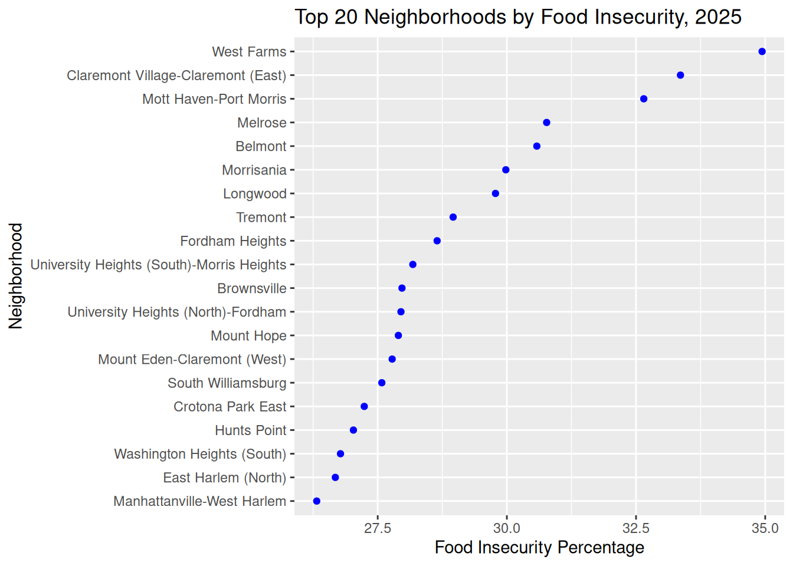

Error in `get_decennial()`:
! could not find function "get_decennial"
race <- raw_race %>%mutate(`Hispanic or Latino (%)`=`Hispanic or Latino`/`Total`,`Black-alone (%)`=`Black-alone`/`Total`,`Asian-alone (%)`=`Asian-alone`/`Total`,`White-alone (%)`=`White-alone`/`Total`)
Error:
! object 'raw_race' not found
race <- raw_race %>%mutate(`Hispanic or Latino (%)`=`Hispanic or Latino`/`Total`,`Hispanic or Latino (%)`=ifelse(is.nan(`Hispanic or Latino (%)`),NA, `Hispanic or Latino (%)`)) %>%mutate(`Black-alone (%)`=`Black-alone`/`Total`,`Black-alone (%)`=ifelse(is.nan(`Black-alone (%)`),NA, `Black-alone (%)`)) %>%mutate(`Asian-alone (%)`=`Asian-alone`/`Total`,`Asian-alone (%)`=ifelse(is.nan(`Asian-alone (%)`),NA, `Asian-alone (%)`)) %>%mutate(`White-alone (%)`=`White-alone`/`Total`,`White-alone (%)`=ifelse(is.nan(`White-alone (%)`),NA, `White-alone (%)`))
Error:
! object 'raw_race' not found
data <-st_set_crs(data, 4326)race_4326 <-st_transform(race, 4326)
Error:
! object 'race' not found
data_clean <- data |>select(NTAName, BoroName, geometry) |>distinct(NTAName, BoroName, .keep_all =TRUE)race_nabes <- race_4326 |>st_join(data_clean, left =TRUE, # left -> defines it as left_join -- meaning all census tract are keptjoin = st_intersects, # join -> defines the join definition as "if they intersect"largest =TRUE)
Describe how the data are collected and by whom. Describe the format of the data, the frequency of updates, dimensions, and any other relevant information. Note any issues / problems with the data, either known or that you discover. Carefully document your sources with links to the precise data sources that you used.
Describe any patterns you discover in missing values. If no values are missing, a graph should still be included showing that.
(suggested: 1-2 graphs plus commentary)
10.3 Results
10.3.1 Question or topic 1
data |>filter(Year %in%c("2023", "2024", "2025")) |>ggplot() +geom_sf(aes(fill = food_insecurity)) +scale_fill_distiller(palette ="Greens", direction =1,limits =c(0, 40), breaks =seq(0, 40, by =10)) +facet_wrap(~ Year, nrow =1) +labs(title ="Food Insecurity Percentage by Neighborhood, 2023-2025", x ="Longitude",y ="Latitude", fill ="Food Insecurity Percentage") +theme(legend.position ="bottom")
data_diff <- data |>select(1:5, "Year", "food_insecurity") |>pivot_wider(names_from = Year, values_from = food_insecurity) |>mutate(`2023-2024`=`2024`-`2023`, `2024-2025`=`2025`-`2024`) |>pivot_longer(cols =c(`2023-2024`, `2024-2025`),names_to ="Year_diff",values_to ="food_diff")data_diff |>ggplot() +geom_sf(aes(fill =`food_diff`)) +scale_fill_gradient2(low ="#2166AC", mid ="white",high ="#B2182B", midpoint =0, limits =c(-20, 20)) +facet_wrap(~ Year_diff, nrow =1) +labs(title ="Change in Food Insecurity Percentage Points by Neighborhood", x ="Longitude",y ="Latitude", fill ="Change in % points")
10.3.2 Question or topic 2
p1 <- data |>filter (Year =="2025") |>group_by (BoroName) |>ggplot(aes(x = food_insecurity, y =reorder(BoroName, food_insecurity, median))) +geom_density_ridges(fill ="blue", alpha =0.5, scale =1) +labs(x ="Food Insecurity Percentage", y ="Borough")p2 <- data |>filter (Year =="2025") |>group_by(BoroName) |>ggplot(aes(x = food_insecurity, y =reorder(BoroName, food_insecurity, median))) +geom_boxplot() +xlim(c(0, 40)) +labs(x ="Food Insecurity Percentage", y ="Borough")p1 + p2 +plot_annotation(title ="Food Insecurity by Borough, 2025")
Error in `plot_annotation()`:
! could not find function "plot_annotation"
data |>ggplot(aes(x = Year, y = food_insecurity, group = NTAName)) +geom_line(alpha =0.25) +geom_point(alpha =0.25) +facet_wrap(~ BoroName) +labs(title ="Food Insecurity Trajectories by Borough", x ="Year", y ="Food Insecurity Percentage")
data |>filter(Year =="2025") |>arrange(desc(food_insecurity)) |>mutate(NTA_Bor =paste0(NTAName, ",", BoroName)) |>slice_head(n =20) |>ggplot(aes(x = food_insecurity, y =reorder(NTAName, food_insecurity))) +geom_point(color ="blue") +labs(title ="Top 20 Neighborhoods by Food Insecurity, 2025",x ="Food Insecurity Percentage",y ="Neighborhood")

10.3.3 Question or topic 3
data |>ggplot(aes(x = unemployment_rate, y = food_insecurity, color = Year)) +geom_jitter(width =0.5, height =0, alpha =0.3) +geom_smooth(method ="lm",se =FALSE) +labs(x ="Unemployment Rate",y ="Food Insecurity",color ="Year")
data <- data |>group_by(Year) |>mutate(scaled_vulpop = (Vulnerable.Population.Score-mean(Vulnerable.Population.Score))/sd(Vulnerable.Population.Score)) |>ungroup()data |>ggplot(aes(x = scaled_vulpop, y = food_insecurity, color = Year)) +geom_point(alpha =0.3) +geom_smooth(method ="lm", se =FALSE) +labs(title ="Food Insecurity and Standardized Vulnerable Population Score",x ="Standardized Z Score for Vulnerable Population Score",y ="Food Insecurity",color ="Year")